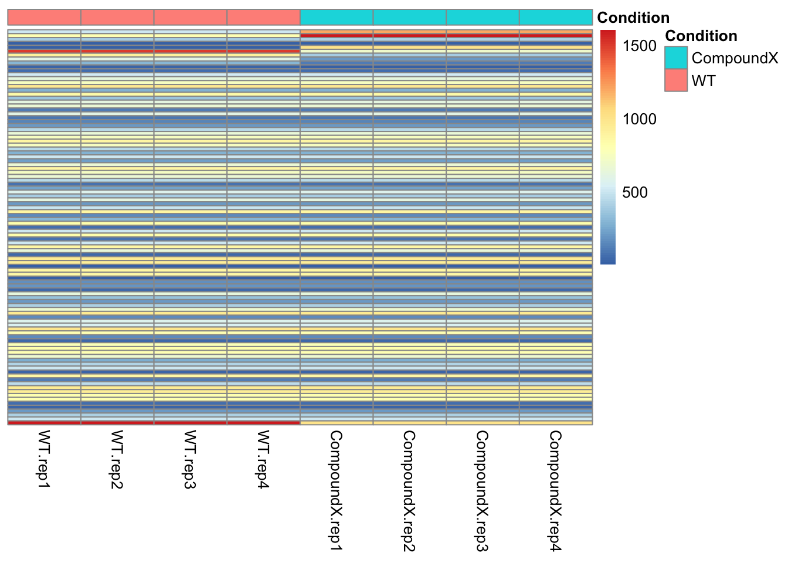
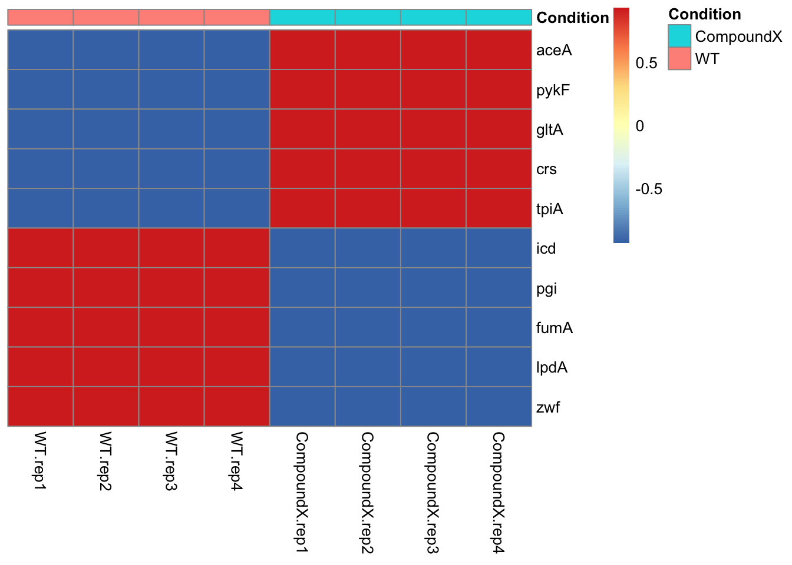
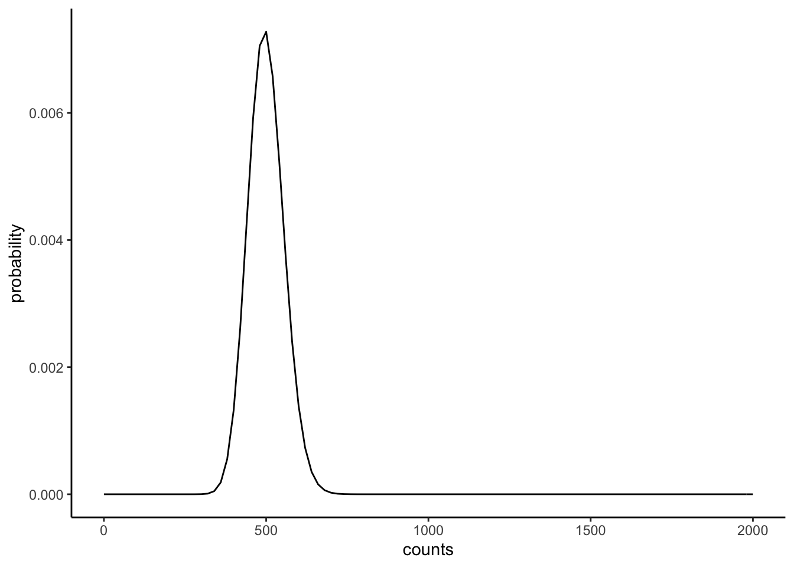
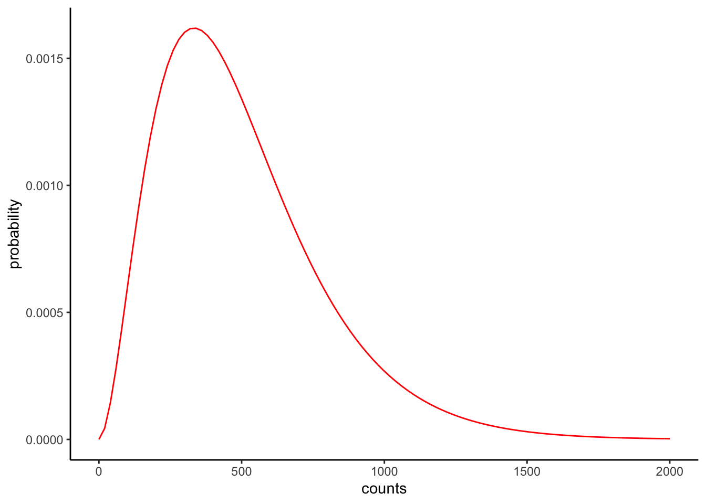
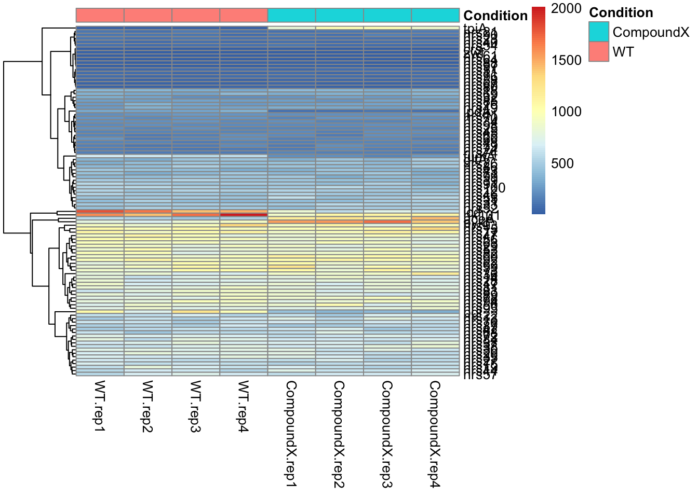

# Libraries required for this
library(tidyverse)
# Set up data/ directory
dir.create("data", showWarnings = FALSE)Tutorial: Generate Synthetic RNA-seq Data
We’re going to create a fictional case to explain RNA-seq.
Let’s say we have some pathogenic microorganism V. scarious, and we’re trying to understand how chemicals can kill it. We’ve done bulk RNA-seq, n=4, with two conditions, one WT, and one with a chemical compound X, and we want to see how the organism responds.
For this simulated data, we’ll say 10 genes respond to the chemical, because the organism’s metabolic pathways are disrupted, and it needs to turn on alternative pathways.
- Some of those genes are highly expressed, whilst other aren’t.
- 5 go down, and 5 go up.
The “true” average concentrations, in terms of reads, are as follows:
| Gene | WT_reads | CompoundX_reads | Regulation |
|---|---|---|---|
| aceA | 500 | 1200 | Up |
| pykF | 800 | 1600 | Up |
| gltA | 400 | 410 | Up |
| crs | 3 | 5 | Up |
| tpiA | 3 | 1000 | Up |
| icd | 1500 | 700 | Down |
| pgi | 900 | 400 | Down |
| fumA | 600 | 200 | Down |
| lpdA | 300 | 100 | Down |
| zwf | 20 | 15 | Down |
- Let’s say we also have 90 genes that don’t respond to the condition, with various expression levels.
We’ll add those as follows:
| Gene | WT_reads | CompoundX_reads | Regulation |
|---|---|---|---|
| nrsX | 1..1000 | idem | None |
Where 1..1000 is a random integer number between 1 and 1000, that is equal betwen the two conditions.
Now, let’s put this an R table
# Table with DE gene reads
df_gene_data_resp <- data.frame(
Gene = c("aceA", "pykF", "gltA", "crs", "tpiA", "icd", "pgi", "fumA", "lpdA", "zwf"),
WT.rep1 = c(500, 800, 400, 3, 3, 1500, 900, 600, 300, 20),
CompoundX.rep1 = c(1200, 1600, 410, 5, 1000, 700, 400, 200, 100, 15)
# Regulation = c("Up", "Up", "Up", "Up", "Up", "Down", "Down", "Down", "Down", "Down")
)
# Table with 90 non-responding genes
expression_levels_nresp90 <- sample(1:1000, 90, replace = TRUE)
df_gene_data_extra <- data.frame(
Gene = paste0("nrs", 11:100), # nrs = non responsive
WT.rep1 = expression_levels_nresp90,
CompoundX.rep1 = expression_levels_nresp90
)
# merge the two
df_gene_data <- bind_rows(df_gene_data_resp, df_gene_data_extra)
# add a gene that makes the total reads equal
max_totalreads = max(colSums(df_gene_data[,-1]))
hk101_expression = 1000+max_totalreads-colSums(df_gene_data[,-1])
df_gene_data <- df_gene_data %>%
add_row(Gene = "hk101",
WT.rep1 = hk101_expression[1],
CompoundX.rep1 = hk101_expression[2])
# Now expand each of the reads columns 4x (to emulate replicates)
df_gene_data_all <- df_gene_data %>%
mutate(
WT.rep2 = WT.rep1,
WT.rep3 = WT.rep1,
WT.rep4 = WT.rep1,
CompoundX.rep2 = CompoundX.rep1,
CompoundX.rep3 = CompoundX.rep1,
CompoundX.rep4 = CompoundX.rep1
)
# Re-arrange the columns, put all WT first then the CompoundX cols
df_gene_data_all <- df_gene_data_all %>%
select(Gene, starts_with("WT"), starts_with("CompoundX"))
head(df_gene_data_all) Gene WT.rep1 WT.rep2 WT.rep3 WT.rep4 CompoundX.rep1 CompoundX.rep2
1 aceA 500 500 500 500 1200 1200
2 pykF 800 800 800 800 1600 1600
3 gltA 400 400 400 400 410 410
4 crs 3 3 3 3 5 5
5 tpiA 3 3 3 3 1000 1000
6 icd 1500 1500 1500 1500 700 700
CompoundX.rep3 CompoundX.rep4
1 1200 1200
2 1600 1600
3 410 410
4 5 5
5 1000 1000
6 700 700colSums(df_gene_data_all[,-1]) WT.rep1 WT.rep2 WT.rep3 WT.rep4 CompoundX.rep1
51164 51164 51164 51164 51164
CompoundX.rep2 CompoundX.rep3 CompoundX.rep4
51164 51164 51164 Let’s see how this would look as a heatmap:
library(pheatmap)
#
df_annotation <- data.frame(
row.names = colnames(df_gene_data_all[,-1]),
Condition = rep(c("WT", "CompoundX"), each = 4)
)
# Prepare the data for pheatmap
heatmap_data <- df_gene_data_all %>%
column_to_rownames(var = "Gene") %>%
as.matrix()
# Generate the heatmap
# note that we cannot scale, because variance = 0 for non-bg
pheatmap(heatmap_data,
cluster_rows = FALSE,
cluster_cols = FALSE,
show_rownames = FALSE,
show_colnames = TRUE,
scale="none",
annotation_col = df_annotation
)
# Show the DE genes
pheatmap(heatmap_data[1:10,],
cluster_rows = FALSE,
cluster_cols = FALSE,
show_rownames = TRUE,
show_colnames = TRUE,
scale="row",
annotation_col = df_annotation
) 
Now convert the df_gene_data_all to a dataframe with variability that we’ll generate with a negative binomial distribution.
Technical note
You might be used to gaussian variability, but RNA-seq counts are typically modeled with a negative binomial distribution, which has variance \(\text{Var} = \mu + \mu^2 / \theta\), where \(\mu\) is the mean and \(\theta\) (size) is the dispersion parameter. A larger \(\theta\) means less noise (approaching Poisson). We’ll use \(\theta = 100\), which is chosen such that we’ll see some false positives and false negatives in our data. Sometimes, the term \(\theta\) is replaced with \(\alpha = 1/\theta\), which is the dispersion parameter used by DESeq2.
For example, a gene with an expression of 500, will have a variability of 500 + 500^2 / 100 = 3000 (pretty high!), and it’s distribution will look as follows:
# plot binominal prob. distribution function
ggplot() +
geom_function(fun = dnbinom, args = list(mu = 500, size = 100)) +
xlim(c(0,2000))+
theme_classic() +
xlab("counts") + ylab("probability")
Let’s check whether if we would have a 1000 samples, we would indeed find a mean of 500 and a variability of 3000;
# draw 1000 numbers according to binominal, mu=500, size=100
simulated_counts <- rnbinom(n = 1000, mu = 500, size = 100)
# calculate and print variability
print(paste0("Mean = ", round(mean(simulated_counts),2)))[1] "Mean = 499.1"print(paste0("Variance = ", round(var(simulated_counts),2)))[1] "Variance = 2938.06"This part of the theory works!
By the way, the shape of the negative binominal distribution becomes more asymmetric when the size factor decreases, e.g. for \(\theta=3\):
# plot prob. distribution function, now for size = 3
ggplot() +
geom_function(fun = dnbinom, args = list(mu = 500, size = 3), color='red') +
xlim(c(0,2000))+
theme_classic() +
xlab("counts") + ylab("probability")
OK. Now let’s add variability to all genes in the dataframe:
set.seed(42) # for reproducibility
dispersion_size <- 100 # size parameter (theta); higher = less noise
# Apply NB noise to each count value
df_gene_data_noisy <- df_gene_data_all %>%
mutate(across(-Gene, ~ ifelse(.x > 0,
rnbinom(n(), mu = .x, size = dispersion_size),
0)))
head(df_gene_data_noisy) Gene WT.rep1 WT.rep2 WT.rep3 WT.rep4 CompoundX.rep1 CompoundX.rep2
1 aceA 554 510 462 507 1163 1231
2 pykF 768 691 832 905 1546 1566
3 gltA 380 337 445 459 352 460
4 crs 3 1 3 5 8 3
5 tpiA 1 4 2 2 812 988
6 icd 1794 1678 1410 1480 824 576
CompoundX.rep3 CompoundX.rep4
1 1138 1432
2 1694 1388
3 397 515
4 5 5
5 996 868
6 731 620Now let’s inspect this data:
df_gene_data_noisy %>%
column_to_rownames(var = "Gene") %>%
as.matrix() %>%
pheatmap(cluster_cols = FALSE,
annotation_col = df_annotation)
And export this data to a tsv file, as would be typical for a count table, and also export metadata.
# Export count matrix (genes as rows, samples as columns, no row names column)
# DESeq2 expects integer counts with gene IDs as row names
df_counts <- df_gene_data_noisy %>%
column_to_rownames(var = "Gene")
write.table(df_counts,
file = "data/count_table.tsv",
sep = "\t",
quote = FALSE,
col.names = NA) # col.names=NA puts a blank in the top-left corner
# Export sample metadata (colData for DESeq2)
# Row names must match the column names of the count matrix
df_metadata <- data.frame(
sample = colnames(df_counts),
condition = rep(c("WT", "CompoundX"), each = 4)
)
write.table(df_metadata,
file = "data/sample_metadata.tsv",
sep = "\t",
quote = FALSE,
row.names = FALSE)
cat("Exported count_table.tsv and sample_metadata.tsv\n")Exported count_table.tsv and sample_metadata.tsvExcellent! In the next section, we’ll check which of the differential expression that we engineered into this data we can find back using RNA-seq analysis by DESeq2.